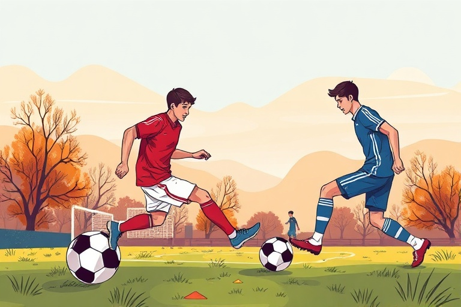

ফুটবলের নিয়ম ও প্রাথমিক দক্ষতা: নতুন খেলোয়াড়দের জন্য একটি সম্পূর্ণ গাইড
Category: football | Language: bn
ফুটবল বিশ্বের জনপ্রিয়তম খেলা এবং এটি শুরু করার জন্য খুব বেশি সরঞ্জামের প্রয়োজন হয় না। এই নিবন্ধটি মূলত সেইসব নতুন খেলোয়াড়দের জন্য লেখা যারা এই খেলার মৌলিক নিয়মগুলো বুঝতে চান এবং মাঠে নামার জন্য প্রয়োজনীয় দক্ষতা অর্জন করতে আগ্রহী। ফুটবল শুধুমাত্র শারীরিক শক্তির খেলা নয়, এটি কৌশল এবং দলগত সংহতির একটি মেলবন্ধন। আপনি যদি পাড়ার মাঠে খেলা শুরু করতে চান বা কোনো ফুটবল একাডেমিতে যোগ দেওয়ার কথা ভাবেন, তবে এই গাইডটি আপনাকে সঠিক দিকনির্দেশনা দেবে।
একটি স্ট্যান্ডার্ড ফুটবল ম্যাচে প্রতিটি দলে ১১ জন করে খেলোয়াড় থাকে। এর মধ্যে গোলকিপার একমাত্র খেলোয়াড় যিনি নিজের পেনাল্টি বক্সের ভেতরে হাত দিয়ে বল ধরতে পারেন। বাকি ১০ জন খেলোয়াড়কে সাধারণত ডিফেন্ডার, মিডফিল্ডার এবং ফরোয়ার্ড—এই তিন ভাগে ভাগ করা হয়। ডিফেন্ডারদের কাজ হলো প্রতিপক্ষের আক্রমণ রুখে দেওয়া, মিডফিল্ডাররা মাঝমাঠে খেলা তৈরি করে এবং ফরোয়ার্ডরা গোল করার চেষ্টা করে। ম্যাচটি মোট ৯০ মিনিটের হয়, যা ৪৫ মিনিটের দুটি অর্ধে বিভক্ত থাকে। মাঝখানে ১৫ মিনিটের একটি বিরতি দেওয়া হয়।
ফুটবলের সবচেয়ে জটিল কিন্তু গুরুত্বপূর্ণ নিয়ম হলো অফসাইড। সহজ ভাষায় বলতে গেলে, যখন একজন আক্রমণভাগের খেলোয়াড়কে বল পাস করা হয়, তখন তার এবং প্রতিপক্ষের গোললাইনের মাঝে অন্তত দুইজন রক্ষণভাগের খেলোয়াড় (সাধারণত গোলকিপারসহ) থাকা আবশ্যক। যদি বল দেওয়ার মুহূর্তে ওই খেলোয়াড় শেষ ডিফেন্ডারের চেয়ে বেশি এগিয়ে থাকেন, তবে সেটি অফসাইড হিসেবে গণ্য হয়। এছাড়া হ্যান্ডবল বা প্রতিপক্ষকে অবৈধভাবে বাধা দিলে ফাউল ধরা হয়। ফাউলের গুরুত্ব অনুযায়ী রেফারি হলুদ কার্ড (সতর্কবার্তা) বা লাল কার্ড (মাঠ থেকে সরাসরি বহিষ্কার) দেখাতে পারেন।
ড্রিবলিং হলো ফুটবলের এমন একটি দক্ষতা যা আপনাকে প্রতিপক্ষের খেলোয়াড়দের কাটিয়ে বল নিয়ে এগিয়ে যেতে সাহায্য করে। নতুনদের জন্য পরামর্শ হলো, বলকে পায়ের খুব কাছে রেখে ছোট ছোট টোকায় এগিয়ে নিয়ে যাওয়ার অভ্যাস করা। ড্রিবলিং করার সময় পায়ের ভেতরের অংশ (Inside) এবং বাইরের অংশ (Outside) উভয়ই ব্যবহার করতে শিখুন। একটি কার্যকর অনুশীলন পদ্ধতি হলো, ৫-৬টি প্লাস্টিকের বোতল বা কোণ এক মিটার দূরত্বে সারিবদ্ধভাবে সাজিয়ে তার মাঝখান দিয়ে সাপের মতো এঁকেবেঁকে বল নিয়ে যাওয়া। এটি আপনার বল নিয়ন্ত্রণের ক্ষমতা বা 'বল কন্ট্রোল' বহুগুণ বাড়িয়ে দেবে।
সঠিকভাবে পাস দেওয়া ফুটবলের সাফল্যের মূল চাবিকাঠি। সবচেয়ে নির্ভরযোগ্য পাস হলো 'পুশ পাস', যা পায়ের ভেতরের চ্যাপ্টা অংশ ব্যবহার করে দেওয়া হয়। পাস দেওয়ার সময় আপনার অন্য পা (যেটি দিয়ে শট নিচ্ছেন না) বলের ঠিক পাশে রাখুন এবং পায়ের আঙুল লক্ষ্যের দিকে তাক করে রাখুন। একটি বাস্তব উদাহরণ হলো, একটি দেয়ালের সামনে দাঁড়িয়ে ৫-৬ ফুট দূরত্ব থেকে বল মারুন এবং দেয়াল থেকে ফিরে আসা বলটি এক টাচে থামানোর চেষ্টা করুন। এতে আপনার পাসিং এবং বল রিসিভ করার ক্ষমতা বা 'ফার্স্ট টাচ' উন্নত হবে।
গোল করার জন্য সঠিক শুটিং টেকনিক জানা প্রয়োজন। যদি আপনি অনেক জোরে শট নিতে চান, তবে পায়ের পাতার ওপরের অংশ বা জুতার ফিতার অংশ (Laces) দিয়ে বলের মাঝখানে আঘাত করুন। আর যদি নিখুঁতভাবে বল জালে পাঠাতে চান, তবে পায়ের ভেতরের অংশ দিয়ে 'প্লেসমেন্ট' করার চেষ্টা করুন। শট নেওয়ার সময় আপনার শরীর যেন বলের ওপর কিছুটা ঝুঁকে থাকে; শরীর বেশি পেছনে হেলে থাকলে বল গোলপোস্টের অনেক ওপর দিয়ে চলে যাবে। মনে রাখবেন, গোল করার জন্য সবসময় গায়ের জোরের চেয়ে সঠিক দিকনির্ণয় বেশি কার্যকর।
নতুন খেলোয়াড়রা প্রায়ই কিছু সাধারণ ভুল করে থাকেন যা তাদের উন্নতিকে বাধাগ্রস্ত করে। যেমন, খেলার সময় সবসময় শুধুমাত্র বলের দিকে তাকিয়ে থাকা। একে 'টানেল ভিশন' বলা হয়। এটি এড়াতে মাঝে মাঝে মাথা তুলে মাঠের চারপাশ দেখে নেওয়ার অভ্যাস করুন যাতে আপনার সতীর্থদের অবস্থান বুঝতে পারেন। আরেকটি বড় ভুল হলো শুধুমাত্র একটি পা ব্যবহার করা। শুরু থেকেই আপনার দুর্বল পা (যেমন আপনি ডানহাতি হলে বাম পা) দিয়ে বল নিয়ন্ত্রণ এবং পাস করার প্র্যাকটিস করুন। এটি আপনাকে একজন বহুমুখী খেলোয়াড় হিসেবে গড়ে তুলবে এবং প্রতিপক্ষের জন্য আপনাকে আটকানো কঠিন হবে।
ফুটবল খেলার জন্য সঠিক সরঞ্জাম এবং নিরাপত্তা বজায় রাখা অত্যন্ত জরুরি। মাঠে ভালো গ্রিপ পাওয়ার জন্য স্টাড দেওয়া বুট এবং পায়ের হাড়কে আঘাত থেকে রক্ষা করতে শিন গার্ড (Shin guards) পরা বাধ্যতামূলক। খেলা শুরু করার আগে অন্তত ১০-১৫ মিনিট হালকা জগিং এবং স্ট্রেচিং করে শরীর গরম করে নিন, যা পেশিতে টান লাগা বা গোড়ালি মচকে যাওয়ার ঝুঁকি কমাবে। আপনার পরবর্তী পদক্ষেপ হতে পারে স্থানীয় কোনো ফুটবল গ্রুপে যোগ দেওয়া বা নিয়মিত কোনো খোলা মাঠে বন্ধুদের সাথে ছোট ছোট ম্যাচে অংশ নেওয়া। নিয়মিত অনুশীলনই আপনাকে একজন দক্ষ ফুটবলার হিসেবে গড়ে তুলবে।